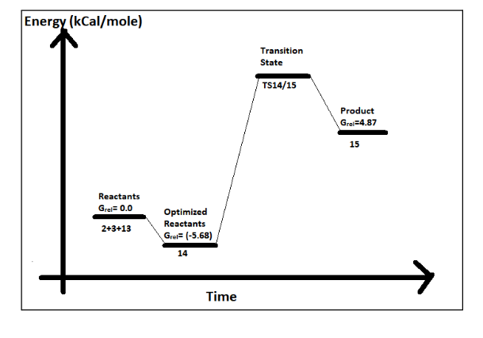

Projects

Theoertical investigation of hydrogenation of Pyrimidine catalysed by Frustrated Lewis Pair (FLP)
Skils and Softwares: Gaussian 16, Bash scripting, High-performance computing (HPC)
Request findings
Exploring the electronic properties of doped zirconia for enhanced optoelectronic applications: A quantum chemical approach
Skills and Softwares: Quantum ESPRESSO, VESTA, Xcrysden, Bash scripting, High-performace computing (HPC)
View paper
Theoretical electronic structure calculation of partial Mn doping in CdY (Y=S, Se, Te) system
Skills and Softwares: Quantum ESPRESSO, VESTA, Xcrysden, Bash scripting, High-performance computing (HPC)
Manuscript in preparation